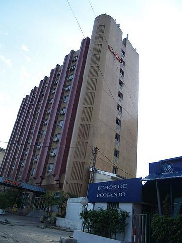

Douala – Cameroun
La conception architecturale à Douala, capitale économique du Cameroun et principale ville portuaire, reflète une combinaison complexe de tradition, modernité et contraintes urbaines. La ville se caractérise par une croissance rapide, un urbanisme dense et un climat équatorial humide, nécessitant des solutions architecturales adaptées à la chaleur, aux fortes précipitations et aux risques d’inondation. Les architectes privilégient des bâtiments ventilés, souvent surélevés, avec de toitures inclinées pour faciliter l’écoulement des eaux de pluie. Les espaces intérieurs sont conçus pour maximiser la lumière naturelle et la circulation de l’air, afin d’améliorer le confort thermique et le bien-être des occupants. Les matériaux locaux et importés jouent un rôle central dans la conception. On retrouve le béton armé, les blocs de ciment, la tôle ondulée et le bois pour les charpentes et aménagements intérieurs. La conception intègre également des éléments modernes comme les façades vitrées et les structures modulaires pour répondre aux besoins des bâtiments commerciaux, résidentiels et administratifs. Enfin, la conception architecturale à Douala tend à concilier esthétique, fonctionnalité et durabilité, tout en s’adaptant aux contraintes environnementales et à l’évolution rapide du paysage urbain. Elle témoigne d’un équilibre entre innovation et respect du contexte local, façonnant l’identité architecturale de la ville.
Les structures architecturales à Douala, principale ville économique et portuaire du Cameroun, reflètent la diversité et la complexité du tissu urbain. La ville combine des bâtiments modernes, des immeubles commerciaux et des logements résidentiels, tout en intégrant certains éléments traditionnels hérités du passé colonial et des pratiques locales. La majorité des constructions modernes repose sur des structures en béton armé, comprenant des poteaux, poutres et dalles, adaptées à la densité urbaine et aux charges importantes des bâtiments commerciaux et administratifs. Les immeubles de bureaux et les centres commerciaux utilisent également des façades en verre et structures métalliques pour l’esthétique et la fonctionnalité. Dans les zones résidentielles, on retrouve des structures en maçonnerie porteuse, utilisant des blocs de ciment ou des briques locales, souvent complétées par des charpentes en bois ou en métal pour les toitures. Les fondations sont renforcées pour résister aux sols argileux et aux risques d’inondation fréquents en saison de pluie. Les structures architecturales de Douala intègrent également des contraintes climatiques : ventilation naturelle, orientation des bâtiments et toitures inclinées pour l’évacuation des eaux pluviales. Aujourd’hui, elles tendent à concilier durabilité, sécurité et esthétisme, tout en répondant aux besoins d’une ville en expansion rapide et en mutation permanente.
L’histoire de l’architecture à Douala reflète l’évolution sociale, économique et culturelle de la ville, de ses origines à aujourd’hui. À l’origine, les habitants construisaient des maisons vernaculaires adaptées au climat équatorial humide, utilisant des matériaux locaux tels que le bois, le bambou et le chaume pour les toitures. Ces habitations favorisaient la ventilation naturelle et la protection contre les fortes pluies et la chaleur. Avec l’arrivée des colons allemands à la fin du XIXᵉ siècle, de nouvelles techniques et matériaux furent introduits, notamment le ciment, la brique et le bois transformé, donnant naissance à des bâtiments administratifs, des écoles et des infrastructures portuaires. Ces constructions coloniales imposaient des formes standardisées tout en conservant certaines adaptations locales au climat. Après l’indépendance du Cameroun, Douala s’est urbanisée rapidement, donnant naissance à une architecture mixte où se mêlent influences traditionnelles, héritage colonial et tendances contemporaines. Les nouveaux immeubles résidentiels et commerciaux adoptent des structures en béton armé, des façades vitrées et des toitures inclinées adaptées aux fortes pluies. Aujourd’hui, l’architecture de Douala continue d’évoluer, combinant fonctionnalité, esthétique et durabilité, tout en conservant des éléments patrimoniaux qui témoignent de son histoire riche et de sa diversité culturelle.